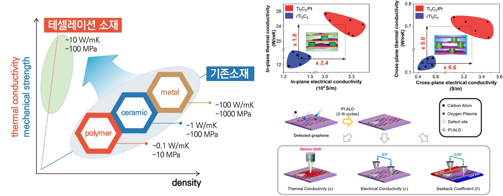
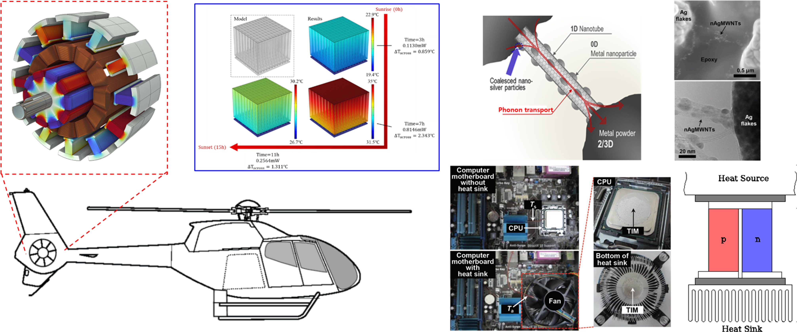

High-performance adsorption structures
for high-efficiency heat pumps and carbon capture
- Developing high-performance adsorption materials
- Optimizing the adsorption structure for effective heat and mass transfer
- Application to adsorption heat pumps and thermal energy storage
- Application to CCUS(Carbon Capture, Utilization and Storage)

"전기화학적 압축기를 이용한 화학흡착식 히트펌프 시스템 개발", 알키미스트 프로젝트 (한국에너지기술평가원), 2019-09-01 ~ 2025-12-31, 연구책임자
"인공 광합성 기반 건물 통합형 저농도 CO2 포집 및 활용 시스템", 알키미스트 프로젝트 (한국산업기술평가관리원), 2023-04-01 ~ 2023-12-31, 연구책임자
Control of material properties based on microstructure adjustment
- Understanding the relationship between microstructure and properties
- Adjusting microstructure for thermal property control
- Adjusting microstructure for mechanical property control
- Adjusting microstructure for ion transport property control

"고열전도성/고강도 테셀레이션 (Tessellation) 소재 연구", 중견연구자지원사업 (한국연구재단), 2021-03-01 ~ 2025-02-28, 연구책임자
Total solution for efficient management of thermal energy
- Thermal design of energy conversion devices
- Thermal design of the core driving system of eco-friendly mobility
- Thermal design for electronics cooling
- Developing high-performance thermal interface materials

"회전익기 테일로터용 최대추력 6,000 N 이상급 비선형 동적모델 역변환 제어기를 적용한 다중 전기식 통합추력시스템 기술 개발"
헬리콥터전기식다중테일로터기술개발 (한국산업기술평가관리원), 2022-04-01 ~ 2025-12-31, 공동연구원